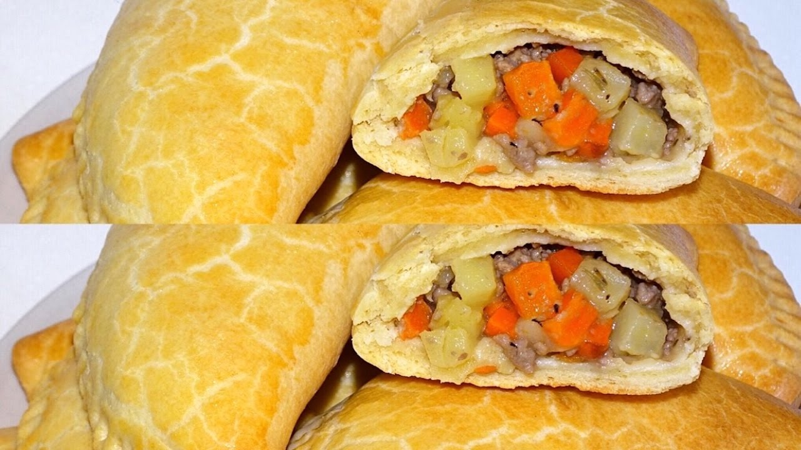

Meat Pie

Description
Meat Pies are delicious pastries filled with minced meat, potato and carrots. This recipe will be showing the details on how to make a delicious Nigerian Meat Pie.
Ingredients for the pastry
- 4 cups (500g) all-purpose flour
- 200g cold Butter,cubed
- 2 eggs
- 1 teaspoon Salt
- 1 tablespoon baking powder
- 1/4 cup (60ml) cold water
- Ingredients for filling: 3/4 pound (350g) Ground beef
- 1 potato, peeled and diced into small cubes
- 1 large onion, chopped
- 1 large carrot, peeled and diced
- 1 cup (240ml) water/beef broth
- Salt to taste
- Pepper to taste
- 2 teaspoon flour
- 1 teaspoon thyme
- 2 tablespoon oil
- 1 egg for brushing